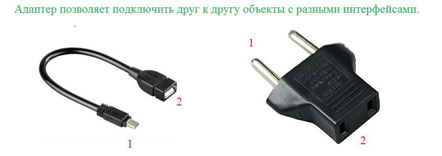

- Привет, Амиго! Хватит бездельничать! Вот твои задания, они посложнее будут, чем предыдущие, и точно улучшат твой процессор. А нам ведь это и нужно. Если вдруг возникнут трудности, то обращайся к коллегам, они точно помогут.
| Дополнительные задания для выполнения в Intellij Idea |
|---|
| 1. Считаем зарплаты В метод main первым параметром приходит имя файла. В этом файле каждая строка имеет следующий вид: имя значение где [имя] - String, [значение] - double. [имя] и [значение] разделены пробелом Для каждого имени посчитать сумму всех его значений Все данные вывести в консоль, предварительно отсортировав в возрастающем порядке по имени. Закрыть потоки. Не использовать try-with-resources Пример входного файла: Петров 2 Сидоров 6 Иванов 1.35 Петров 3.1 Пример вывода: Иванов 1.35 Петров 5.1 Сидоров 6.0 |
| 2. Самый богатый В метод main первым параметром приходит имя файла. В этом файле каждая строка имеет следующий вид: имя значение где [имя] - String, [значение] - double. [имя] и [значение] разделены пробелом Для каждого имени посчитать сумму всех его значений Вывести в консоль имена, у которых максимальная сумма Имена разделять пробелом либо выводить с новой строки Закрыть потоки. Не использовать try-with-resources Пример входного файла: Петров 0.501 Иванов 1.35 Петров 0.85 Пример вывода: Петров |
| 3. Хуан Хуанович В метод main первым параметром приходит имя файла. В этом файле каждая строка имеет следующий вид: имя день месяц год где [имя] - может состоять из нескольких слов, разделенных пробелами, и имеет тип String [день] - int, [месяц] - int, [год] - int данные разделены пробелами Заполнить список PEOPLE импользуя данные из файла Закрыть потоки. Не использовать try-with-resources Пример входного файла: Иванов Иван Иванович 31 12 1987 Вася 15 5 2013 |
| 4. Ищем нужные строки Считать с консоли имя файла. Вывести в консоль все строки из файла, которые содержат всего 2 слова из списка words Закрыть потоки. Не использовать try-with-resources Пример: words содержит слова А, Б, В Строки: В Б А Д //3 слова из words, не подходит Д А Д //1 слово из words, не подходит Д А Б Д //2 слова - подходит, выводим |
| 5. Слова с цифрами В метод main первым параметром приходит имя файла1, вторым - файла2. Файл1 содержит строки со слов, разделенные пробелом. Записать через пробел в Файл2 все слова, которые содержат цифры, например, а1 или abc3d Закрыть потоки. Не использовать try-with-resources |
| 6. Замена чисел 1. В статическом блоке инициализировать словарь map парами [число-слово] от 0 до 12 включительно Например, 0 - "ноль", 1 - "один", 2 - "два" 2. Считать с консоли имя файла 3. Заменить все числа на слова используя словарь map 4. Результат вывести на экран 5. Закрыть потоки. Не использовать try-with-resources Пример данных: Это стоит 1 бакс, а вот это - 12. Переменная имеет имя file1. 110 - это число. Пример вывода: Это стоит один бакс, а вот это - двенадцать. Переменная имеет имя file1. 110 - это число. |
| 7. Длинные слова В метод main первым параметром приходит имя файла1, вторым - файла2 Файл1 содержит слова, разделенные пробелом. Записать через запятую в Файл2 слова, длина которых строго больше 6 Закрыть потоки. Не использовать try-with-resources Пример выходных данных: длинное,короткое,аббревиатура |
| 8. Перевертыши 1 Считать с консоли имя файла. 2 Для каждой строки в файле: 2.1 переставить все символы в обратном порядке 2.2 вывести на экран 3 Закрыть потоки. Не использовать try-with-resources Пример тела входного файла: я - программист. Амиго Пример результата: .тсиммаргорп - я огимА |
| 9. Контекстная реклама В методе main подмените объект System.out написанной вами реадер-оберткой Ваша реадер-обертка должна выводить на консоль контекстную рекламу после каждого второго println-а Вызовите готовый метод printSomething(), воспользуйтесь testString Верните переменной System.out первоначальный поток Рекламный текст: "JavaRush - курсы Java онлайн" Пример вывода: first second JavaRush - курсы Java онлайн third fourth JavaRush - курсы Java онлайн fifth |
| 10. Исправить ошибку Программа содержит всего 1 ошибку. Найди и исправь ее |
- Ты уже всё сделал? Вот тебе ещё и бонусные задания повышенной сложности:
| 1. Отслеживаем изменения Задача: Считать в консоли 2 имени файла - file1, file2. Файлы содержат строки, file2 является обновленной версией file1, часть строк совпадают. Нужно создать объединенную версию строк, записать их в список lines Операции ADDED и REMOVED не могут идти подряд, они всегда разделены SAME Пример: оригинальный редактированный общий
file1: file2: результат:(lines)
строка1 строка1 SAME строка1
строка2 REMOVED строка2
строка3 строка3 SAME строка3
строка4 REMOVED строка4
строка5 строка5 SAME строка5
строка0 ADDED строка0
строка1 строка1 SAME строка1
строка2 REMOVED строка2
строка3 строка3 SAME строка3
строка5 ADDED строка5
строка4 строка4 SAME строка4
строка5 REMOVED строка5
|
| 2. Свой FileWriter Задача: Реализовать логику FileConsoleWriter Должен наследоваться от FileWriter При записи данных в файл, должен дублировать эти данные на консоль |
| 3. Знакомство с тегами Задача: Считайте с консоли имя файла, который имеет HTML-формат Пример: Info about Leela <span xml:lang="en" lang="en"><b><span>Turanga Leela </span></b></span><span>Super</span><span>girl</span> Первым параметром в метод main приходит тег. Например, "span" Вывести на консоль все теги, которые соответствуют заданному тегу Каждый тег на новой строке, порядок должен соответствовать порядку следования в файле Количество пробелов, \n, \r не влияют на результат Файл не содержит тег CDATA, для всех открывающих тегов имеется отдельный закрывающий тег, одиночных тегов нету Тег может содержать вложенные теги Пример вывода: <span xml:lang="en" lang="en"><b><span>Turanga Leela</span></b></span> <span>Turanga Leela</span> <span>Super</span> <span>girl</span> Шаблон тега: <tag>text1</tag> <tag text2>text1</tag> <tag text2>text1</tag> text1, text2 могут быть пустыми |
- Привет, Амиго! Тяжелый уровень? Вижу твои транзисторы перегрелись. Ты присаживайся, а я схожу за вентилятором.
- Вчера я уже давал ссылку на эти лекции, но ты найдешь их очень полезными и для сегодняшнего материала.
- Привет, Амиго!
| Задачи |
|---|
| 1. Ридер обертка В методе main подмените объект System.out написанной вами ридер-оберткой по аналогии с лекцией Ваша ридер-обертка должна преобразовывать весь текст в заглавные буквы Вызовите готовый метод printSomething(), воспользуйтесь testString Верните переменной System.out первоначальный поток Вывести модифицированную строку в консоль. |
| 2. Ридер обертка 2 В методе main подмените объект System.out написанной вами ридер-оберткой по аналогии с лекцией Ваша ридер-обертка должна заменять все подстроки "te" на "??" Вызовите готовый метод printSomething(), воспользуйтесь testString Верните переменной System.out первоначальный поток Вывести модифицированную строку в консоль. |
| 3. Выводим только цифры В методе main подмените объект System.out написанной вами ридер-оберткой по аналогии с лекцией Ваша ридер-обертка должна выводить только цифры Вызовите готовый метод printSomething(), воспользуйтесь testString Верните переменной System.out первоначальный поток Вывести модифицированную строку в консоль. Пример вывода: 12345678 |
| 4. Решаем пример В методе main подмените объект System.out написанной вами ридер-оберткой по аналогии с лекцией Ваша ридер-обертка должна выводить на консоль решенный пример Вызовите готовый метод printSomething(), воспользуйтесь testString Верните переменной System.out первоначальный поток Возможные операции: + - * Шаблон входных данных и вывода: a [знак] b = c Отрицательных и дробных чисел, унарных операторов - нет. Пример вывода: 3 + 6 = 9 |
| 5. Дублируем текст Считайте с консоли имя файла В методе main подмените объект System.out написанной вами ридер-оберткой по аналогии с лекцией Ваша ридер-обертка должна дублировать вывод всего текста в файл, имя которого вы считали Вызовите готовый метод printSomething(), воспользуйтесь testString Верните переменной System.out первоначальный поток Закройте поток файла Пример вывода на экран: it's a text for testing Пример тела файла: it's a text for testing |
- Привет, Амиго! Сегодня я расскажу как сделать новую интересную штуку – подменить объект System.out.
System.out - это статическая переменная out типа PrintStream в классе System. Эта переменная имеет модификатор final, так что просто так новое значение ей не присвоить. Но класс System имеет для этого специальный метод setOut(PrintStream stream). Им то мы и воспользуемся.
- Интересно. А на что мы его заменим?
- Нам нужен какой-то объект, куда можно будет собирать выведенные данные. Лучше всего на эту роль подойдет ByteArrayOutputStream. Это специальный класс, который с одной стороны является динамическим (растягиваемым) массивом, а с другой – реализует интерфейс OutputStream.
- Адаптер между массивом и OutputStream?
- Что-то вроде того. Вот как будет выглядеть наш код.
| Код |
|---|
| public static void main(String[] args) throws Exception { //запоминаем настоящий PrintStream в специальную переменную PrintStream consoleStream = System.out; //Создаем динамический массив ByteArrayOutputStream outputStream = new ByteArrayOutputStream(); //создаем адаптер к классу PrintStream PrintStream stream = new PrintStream(outputStream); //Устанавливаем его как текущий System.out System.setOut(stream); //Вызываем функцию, которая ничего не знает о наших манипуляциях printSomething(); //Преобразовываем записанные в наш ByteArray данные в строку String result = outputStream.toString(); //Возвращаем все как было System.setOut(consoleStream); } public static void printSomething() { System.out.println("Hi"); System.out.println("My name is Amigo"); System.out.println("Bye-bye!"); } |
- А что мы будем делать с полученной строкой?
- Да что угодно. Можем, например, развернуть ее задом наперед. Тогда это будет выглядеть так:
| Код |
|---|
| public static void main(String[] args) throws Exception { //запоминаем настоящий PrintStream в специальную переменную PrintStream consoleStream = System.out; //Создаем динамический массив ByteArrayOutputStream outputStream = new ByteArrayOutputStream(); //создаем адаптер к классу PrintStream PrintStream stream = new PrintStream(outputStream); //Устанавливаем его как текущий System.out System.setOut(stream); //Вызываем функцию, которая ничего не знает о наших манипуляциях printSomething(); //Преобразовываем записанные в наш ByteArray данные в строку String result = outputStream.toString(); //Возвращаем все как было System.setOut(consoleStream); //разворачиваем строку StringBuilder stringBuilder = new StringBuilder(result); stringBuilder.reverse(); String reverseString = stringBuilder.toString(); //выводим ее в консоль System.out.println(reverseString); } public static void printSomething() { System.out.println("Hi"); System.out.println("My name is Amigo"); System.out.println("Bye-bye!"); } |
- Как интересно. Теперь я начинаю понемногу понимать, какие большие возможности дают эти маленькие классы.
Спасибо за интересный урок, Билаабо.
- Привет, Амиго! Ты уже давно пользуешься классами BufferedReader и InputStreamReader. Теперь давай разберемся, что же они делают.
Класс InputStreamReader является классическим адаптером от интерфейса InputStream к интерфейсу Reader. Тут даже и добавить нечего.
Но в вкратце, происходит вот что. Когда ты запрашиваешь (читаешь посредством read) у объекта типа InputStreamReader очередной символ, он читает из переданного ему в конструктор InputStream-а несколько байт и возвращает их как один char.
Но Reader – не самый удобный объект для работы. Нам часто нужно прочитать не все введенные пользователем символы за один раз, а разбить эти символы на строки.
- Но у класса Reader ведь есть метод read(CharsetBuffer s), разве мы не можем использовать его?
- Этот метод читает данные куском, размер которого равен размеру буффера и помещает их в объект CharsetBuffer.
Текст обычно делится на строки (линии, line - строка по-английски). Поэтому метод read(CharsetBuffer s) может прочитать несколько «линий» за один раз. Если же нам нужно прочитать текст именно до конца «линии» (т.е. все символы строки до enter), для этого лучше поискать что-нибудь еще. И такой метод есть. В классе BufferedReader.
Класс BufferedReader, являющийся удобной надстройкой над Reader, имеет один очень удобный метод: readLine(). Этот метод позволяет читать из Reader-а сразу целыми строками (т.е. линиями). Когда ты в своем коде вызываешь метод readLine, он читает из объекта Reader символы, пока не встретится enter. Как только enter встретится, метод склеит символы в одну строку и вернет ее.
- Я этим постоянно пользовался, только не знал как все это работает. Теперь знаю. Спасибо, Ким.
- Привет, Амиго!
| Задачи |
|---|
| 1. Четные байты Считать с консоли 2 имени файла. Вывести во второй файл все байты с четным индексом. Закрыть потоки ввода-вывода. Пример: второй байт, четвертый байт, шестой байт и т.д. |
| 2. Считаем слово Считать с консоли имя файла. Файл содержит слова, разделенные знаками препинания. Вывести в консоль количество слов "world", которые встречаются в файле. Закрыть потоки. Не использовать try-with-resources. |
| 3. Выделяем числа Считать с консоли 2 имени файла. Вывести во второй файл все числа, которые есть в первом файле. Числа выводить через пробел. Закрыть потоки. Не использовать try-with-resources. Пример тела файла: 12 text var2 14 8v 1 Результат: 12 14 1 |
| 4. Замена знаков Считать с консоли 2 имени файла. Первый Файл содержит текст. Заменить все точки "." на знак "!", вывести во второй файл. Закрыть потоки. Не использовать try-with-resources. |
| 5. Пунктуация Считать с консоли 2 имени файла. Первый Файл содержит текст. Удалить все знаки пунктуации, включая символы новой строки. Результат вывести во второй файл. Закрыть потоки. Не использовать try-with-resources. |
- Привет, Амиго! Вчера Риша рассказывал тебе про FileInputStream, FileOutputStream. А сегодня я расскажу тебе о классах FileReader и FileWriter.
Как ты уже, наверное, догадался, все эти классы являются адаптерами между объектом File и “интерфейсами” InputStream, OutputStream, Reader, Writer.
- Они похожи на адаптеры между File и Reader/Writer, вот только в конструктор к ним нужно передать объект String, а не File!
- На самом деле, у них несколько конструкторов: есть и File и String. И если ты передашь в конструктор класса объект типа String, то в нем, незаметно для тебя создастся объект типа File, с путем файла, взятым из переданного String.
Это сделано для удобства. Разработчики Java взяли самые частые сценарии использования этих классов, и написали для всех их конструкторы. Это очень удобно, не так ли?
- Да, удобно, согласен. Но почему тогда мне постоянно приходится писать:
BufferedReader bufferedReader = new BufferedReader(new InputStreamReader(System.in));
Почему они не добавили этот сценарий?
- Дело в том, что типичная программа на Java не работает с консолью. Вернее, почти никогда ничего с нее не читает. Это может быть web-сервер, сервер приложений или еще какая-нибудь сложная система.
Но для вывода данных и текста на консоль добавили объект PrintStream. Так как те же «серверные программы» часто пишут в консоль свое состояние работы, ошибки и еще разную информацию.
- Понятно. А копировать файл с помощью FileReader и FileWriter тоже можно?
- Да, если он текстовый (т.е. состоит из символов). Вот, смотри пример:
| Копируем файл на диске |
|---|
| public static void main(String[] args) throws Exception { FileReader reader = new FileReader("c:/data.txt"); FileWriter writer = new FileWriter("c:/result.txt"); while (reader.ready()) //пока есть непрочитанные байты в потоке ввода { int data = reader.read(); //читаем один символ (char будет расширен до int) writer.write(data); //пишем один символ (int будет обрезан/сужен до char) } //закрываем потоки после использования reader.close(); writer.close(); } |
- Почти никаких отличий.
- Да, отличия минимальны.
- Привет, Амиго!
| Задачи |
|---|
| 1. TableAdapter Измените класс TableAdapter так, чтобы он адаптировал ATable к BTable. Метод getHeaderText должен возвращать такую строку "[username] : tablename". Пример, "[Amigo] : DashboardTable" |
| 2. Адаптер Используйте класс AdapterFileOutputStream, чтобы адаптировать FileOutputStream к новому интерфейсу AmigoStringWriter |
| 3. Адаптация нескольких интерфейсов Адаптировать IncomeData к Customer и Contact. Классом-адаптером является IncomeDataAdapter. Инициализируйте countries перед началом выполнения программы. Соответствие кода страны и названия: UA Ukraine RU Russia CA Canada Дополнить телефонный номер нулями до 10 цифр при необходимости (смотри примеры) Обратите внимание на формат вывода фамилии и имени человека |
| 4. И еще один адаптер Адаптировать Scanner к PersonScanner. Классом-адаптером является PersonScannerAdapter. Данные в файле хранятся в следующем виде: Иванов Иван Иванович 31 12 1950 В файле хранится большое количество людей, данные одного человека находятся в одной строке. Метод read() должен читать данные одного человека. |
| 5. Закрепляем адаптер Адаптировать Customer и Contact к RowItem. Классом-адаптером является DataAdapter. Инициализируйте countries перед началом выполнения программы. Соответствие кода страны и названия: UA Ukraine RU Russia CA Canada |
- Привет, Амиго! Сегодня Элли тебе рассказала про паттерн адаптер.
Большинство классов, относящихся к потокам ввода-вывода, реализовано в виде адаптера. Они преобразуют либо равнозначные интерфейсы, либо соединяют их по принципу от простого к сложному.
- А InputStreamReader и BufferedReader – тоже адаптеры? По крайней мере, они очень похожи на них по стилю использования: объект после создания передается в конструктор другого объекта.
- Да, InputStreamReader преобразует интерфейс InputStream к интерфейсу Reader. BufferedReader не адаптер в чистом виде, т.к. разработчики Java решили не выделять его методы в отдельный интерфейс. Но по духу, он стоит очень близко к ним.
Вместо того, чтобы писать 100500 различных классов, разработчики Java написали два десятка адаптеров и разрешили их соединять друг с другом, как программисту захочется.
Такой подход очень удобен. Программист всегда может написать свой класс и/или адаптер, реализовать в нем стандартный интерфейс и включить его в собранную им цепочку объектов-адаптеров.
- Так вот как оно, оказывается, все устроено. Вместо больших сложных классов – цепочки простых объектов и адаптеры. А ты просто создаешь их и соединяешь в правильном порядке!
- И реализовываешь то, чего не хватает.
- Да, я понимаю.
- Но вообще-то я хотел сегодня рассказать тебе про Reader и Writer. Это два абстрактных класса, которые очень похожи на классы InputStream и OutputStream. Но в отличие от них, эти два класса работают с символами. Они читают символы и записывают символы. Они очень удобны при работе с текстовой информацией. Давай посмотрим, какие методы у них есть:
| Методы класса Reader | Что метод делает |
|---|---|
| int read(char[] cbuf); | - метод сразу читает много символов в буфер (массив символов), пока буфер не заполнится или не закончатся символы там, откуда он их читает. Метод возвращает количество реально прочитанных символов (оно может быть меньше длины массива) |
| int read(); | - метод читает один символ и возвращает его как результат. Результат расширяется до int, для красоты. Если доступных символов нет, метод вернет «-1». |
| boolean ready(); | - метод возвращает true если есть еще непрочитанные символы для методов read |
| void close(); | - метод «закрывает» поток, вызывается после окончания работы с потоком. Объект выполняет служебные операции, связанные с закрытием файла на диске и т.д. Из потока больше нельзя читать данные. |
- Оказывается, благодаря методу read(char[] cbuf) из Reader’а можно читать символы целыми блоками, а не по одному символу. Так и быстрее и удобнее.
- Да. А теперь посмотрим, какие методы есть у Writer:
| Метод | Что метод делает |
|---|---|
| void write(int c); | - метод записывает один символ. Тип int сужается до char, лишняя часть просто отбрасывается. |
| void write(char[] cbuff); | - метод записывает массив символов. |
| void write(String s); | - метод записывает строку. Она просто преобразовывается в массив символов и вызывается второй метод. |
| void flush(); | - если есть данные, которые хранятся где-то внутри и еще не записаны, то они записываются. |
| void close(); | - метод «закрывает» поток – вызывается после окончания работы с потоком. Объект выполняет служебные операции, связанные с закрытием файла на диске и т.д. В поток больше нельзя писать данные, flush при этом вызывается автоматически. |
Важно понять, что Reader и Writer – это абстрактные классы. Они ничего не делают и практически не содержат кода. Все их методы должны будут реализовываться в классах, которые будут унаследованы от них. Их же задача – стандартизировать механизм взаимодействия между классами. Разработчикам не нужно изобретать свои стандарты для взаимодействия друг с другом. Гораздо удобнее всем поддерживать несколько базовых стандартов. Тогда классы, написанные разными программистами, смогут легко взаимодействовать не только с классами, написанными разработчиками Java, но и с классами других программистов.
Стандарты – великая сила.
- Согласен. Поддержка общих стандартов – благо для всех.
- Привет, Амиго! Сегодня я расскажу тебе, что же такое «адаптер». Надеюсь, что после его изучения ты начнешь понимать потоки ввода-вывода гораздо лучше.
Представь, что в твоей программе ты используешь два фреймворка, написанные другими программистами/компаниями. Оба фреймворка очень хорошие и используют принципы ООП: абстракцию, полиморфизм, инкапсуляцию. Они вместе практически полностью покрывают задачи твоей программы. За тобой осталось простая задача - объекты, которые создает один фреймворк нужно передать во второй. Но оба фреймворка совершенно разные и «не знают друг о друге» - т.е. не имеют общих классов. Тебе нужно как-то преобразовывать объекты одного фреймворка в объекты другого.
Эту задачу можно красиво решить, применив подход (паттерн проектирования) «адаптер»:
| Код | Описание |
|---|---|
| class MyClass implements Interface2 { private Interface1 object; MyClass(Interface1 object) { this.object = object; } // тут располагаются методы Interface2, // которые вызывают методы Interface1 } |
Это схематическое описание «паттерна проектирования адаптер». Суть его в том, что класс MyClass является преобразователем (адаптером) одного интерфейса к другому. |
- А можно более конкретный пример?
- Ок. Допустим, что у каждого фреймворка есть свой уникальный интерфейс «список», вот как это может выглядеть:
| Код | Описание |
|---|---|
| interface AlphaList { void add(int value); void insert(int index, int value); int get(int index); void set(int index, int value); int count(); void remove(int index); } |
Код из первого(Alpha) фреймворка. AlphaList – это один из интерфейсов, для взаимодействия кода фреймворка и кода, который будет использовать этот фреймворк. |
| class AlphaListManager { public static AlphaList createList() { //какой-то код по созданию объекта } } |
AlphaListManager – класс фреймворка, метод которого createList создает объект типа AlphaList |
| interface BetaList { int getValue(int index); void setValue(int index, int value); int getSize(); void setSize(int newSize); } class BetaSaveManager { public static void saveList(BetaList list) { //какой-то код по сохранению объекта //типа BetaList в файл на диске } } |
Код из второго(Beta) фреймворка. BetaList – это один из интерфейсов, для взаимодействия кода фреймворка и кода, который будет использовать этот фреймворк. BetaSaveManager – класс фреймворка, метод которого saveList сохраняет на диск объект типа BetaList |
| class ListAdapter implements BetaList { private AlphaList list; ListAdapter(AlphaList list) { this.list = list; } int getValue(int index) { return this.list.get(index); } void setValue(int index, int value) { this.list.set(index, value); } int getSize() { return this.list.count(); } void setSize(int newSize) { if (newSize > this.list.count() { while (this.list.count() < newSize) { this.list.add(null); } } else if (newSize < this.list.count() { while (this.list.count() > newSize) { list.remove(list.count() - 1); } } } } |
Класс «адаптер» (т.е. переходник) от интерфейса AlphaList к интерфейсу BetaList Класс ListAdapter реализует интерфейс BetaList из второго фреймворка. Когда кто-то вызывает эти методы, код класса перевызывает методы переменной list, которая имеет тип AlphaList из первого фреймворка. Объект типа AlphaList передается в конструктор ListAdapter в момент создания Метод setSize работает по принципу: если нужно увеличить размер списка – добавим туда пустых (null) элементов. Если нужно уменьшить – удалим несколько последних. |
|
public static void main(String[] args)
{ AlphaList listAlpha = AlphaListManager.createList(); BetaList listBeta = new ListAdapter(listAlpha); BetaSaveManager.saveList(listBeta); } |
Пример использования |
- Больше всего понравился пример использования. Очень компактно и понятно.

Привяжите социальную сеть к вашему аккаунту: